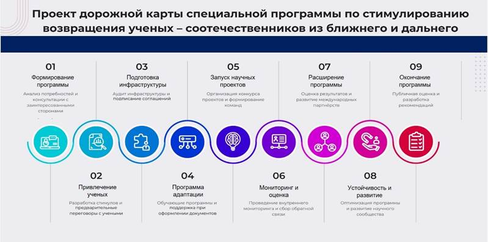

Цель и актуальность проблемы
Возврат ученых из-за рубежа имеет ключевое значение для научно-технологического развития Казахстана. Ученые, обладающие международным опытом, способны внести значительный вклад в развитие научных исследований и инноваций в стране. В то же время, стимулирование возвращения ученых - сложный и ресурсоемкий процесс, который требует комплексного подхода и значительных инвестиций.
Обзор текущей ситуации с миграцией ученых
Миграция ученых из Казахстана представляет собой значимую тенденцию в контексте глобальной мобильности научных кадров. По данным [1], количество ученых из Казахстана, работающих за рубежом, составляет 232 на 2014 год. Эта тенденция отражает глобальный процесс утечки умов, который затрагивает многие страны, стремящиеся к технологическому и научному развитию.
Основными причинами миграции ученых являются поиск лучших исследовательских возможностей, более высокий уровень заработной платы и улучшенные условия работы [2] [3]. Кроме того, значительную роль играют доступность современной исследовательской инфраструктуры и возможности для международного сотрудничества [4].
По мнению экспертов, утечка мозгов из Казахстана может иметь долгосрочные негативные последствия для научного и технологического потенциала страны [5]. Это подчеркивает необходимость разработки стратегий для стимулирования возвращения ученых и поддержки их карьерного роста в Казахстане.
В ответ на эту тенденцию, правительство Казахстана и научные организации должны рассмотреть возможности создания более привлекательных условий для научной работы в стране, включая повышение уровня финансирования исследований, развитие инфраструктуры и укрепление международных научных связей.
2.3.1 Анализ международного опыта
Примеры успешного возвращения ученых в разных странах и важность поддержки местных ученых
Существующие международные исследования подтверждают, что успешное возвращение ученых требует комплексного подхода, включающего финансовые стимулы, создание благоприятных условий для научной работы и инвестиции в местные научные кадры. Страны, успешно реализующие такие программы, демонстрируют значительный рост в научной сфере и технологическом развитии. Например, Сингапур и Корея инвестировали значительные средства в развитие местной научной инфраструктуры, что позволило не только возвращать ученых, но и удерживать талантливые кадры внутри страны [6] [7].
В дополнение к международному опыту, важно подчеркнуть, что поддержка местных ученых становится ключевым фактором для развития национальной науки. Это включает в себя предоставление грантов на исследования, налоговые льготы для научных организаций, а также создание современных лабораторий и научно-исследовательских центров. Например, программы поддержки молодых ученых и исследователей в Германии показали свою эффективность в улучшении качества научных исследований и увеличении числа публикаций [8].
Кроме того, важно создавать условия для профессионального роста и карьерного развития молодых ученых внутри страны. Это может включать программы наставничества, возможности для международного обмена и участия в международных научных проектах и конференциях. Например, в Австралии были реализованы успешные программы менторства, которые способствовали развитию профессиональных навыков у молодых ученых [9].
В контексте Казахстана, эти международные примеры и практики могут служить основой для разработки собственных стратегий по привлечению и поддержке ученых. Учитывая текущие вызовы и потребности в научной сфере, Казахстан может воспользоваться этим опытом для создания эффективных программ, направленных на поддержку как возвращающихся, так и местных ученых. Это позволит стране не только повысить уровень научных исследований, но и обеспечить долгосрочное устойчивое развитие научного потенциала.
2.3.2 Влияние на научную продуктивность и влияние на привлечение и удержание талантливых ученых
Индия. За последние десятилетия Индия наблюдает реверсивную миграцию ученых и профессионалов, которые возвращаются из-за рубежа. Эту тенденцию подкрепляют различные обстоятельства и государственные программы, создающие благоприятный контекст для таких возвращенцев [10]. Устойчивый экономический рост в таких сферах как ИТ, биотехнологий и фармацевтики открывают широкие профессиональные возможности. Благодаря чему Индия стала привлекать высоко квалифицированных специалистов, желающих работать в этих сферах [11]. Государство активизировало программы для привлечения своих граждан из-за рубежа. Мероприятие «Растрия Праваси Бхаратия Дивас» например, нацелено на укрепление связей с Индийской диаспорой [12]. Инициативы вроде «Ваапаси» и «Инновации в Индии» стимулируют возвращение ученых, предлагая площадку для инноваций и сотрудничества [13]. Страна также акцентирует внимание на создание технопарков и инновационных хабов. Учреждения, вроде Индийских институтов технологии и Индийских институтов менеджмента, подчеркивают репутацию Индии как центра академических и исследовательских инициатив. Для дополнительной мотивации возвращения профессионалов власти предполагают упростить процесс признания зарубежных дипломов, предоставить налоговые льготы, создать больше международных исследовательских центров и оптимизировать процедуру получения грантов.
Китай. Согласно данным Министерства образования КНР в период с 1978 по 2017 год 84% обучавшихся за пределами КНР китайских студентов (3132 тыс. человек) вернулись на родину. Только в 2017 году общее число вернувшихся в Китай выпускников зарубежных образовательных учреждений составило 480,9 тыс. – на 11% больше, чем годом ранее. Это третья волна обратной эмиграции соотечественников в Китай стала самой масштабной с момента создания государства в 1949 году. Основная причина возвращения – стабильное развитие и растущая мощь Китая, а также специальные программы привлечения возвратных мигрантов.
Программы направлены на привлечение высокопрофессиональных кадров из-за рубежа в важные государственные проекты, учебные заведения, лаборатории, а также предприятия центрального подчинения, финансовые учреждения государственного значения, высокотехнологичные зоны. В стране создано уже более 300 бизнес-инкубаторов для стартапов соотечественников, приехавших из-за рубежа, где есть много шансов трудоустройства и принята упрощенная политика регулирования бизнеса. Ученым предложены конкурентоспособные условия труда, включая высокую зарплату, гранты на научные исследования и возможность для личного развития.
Китай разрабатывает новые программы для мотивации китайских студентов, обучающихся за границей, к возврату домой и запуску собственных инновационных предприятий. Предлагаемые меры включают: упрощение локальных процедур сертификации, облегчение условий прописки, создание благоприятных условий для образования детей специалистов, предоставление кредитов на основе интеллектуальной собственности для финансирования начинающих компаний, сокращенные процедуры регистрации брендов, упрощение экспортных процессов и поддержка в коммерциализации научных и технологических проектов.
Бразилия. Бразилия, как ключевой игрок среди стран БРИКС, демонстрировала стабильный экономический рост в начале XXI века. Особенные успехи страны в сферах сельского хозяйства, авиапрома и энергетики открыли новые горизонты для специалистов и исследователей [14]. Страна активно инвестировала в научные исследования и разработки, в частности, в области биотоплива и авиации, создавая условия для возвращения ученых и предоставляя им место для развития и реализации их экспертного опыта [15]. С целью возвращения своих ученых Бразилия планирует дополнительные инвестиции в исследовательские объекты, предлагает налоговые преференции и финансовую поддержку для репатриантов, а также создание инновационных центров в сотрудничестве с частным сектором. Укрепление сотрудничества с мировыми университетами для совместных проектов также в приоритете. Привлечение ученых из других стран может дать существенный толчок инновационной деятельности Бразилии. Данный подход, сочетая экономические стимулы с институциональной поддержкой, отражает продуманную стратегию использования зарубежного кадрового потенциала.
ЮАР. Южно-Африканская республика многие годы боролась с проблемой утечки мозгов, пассивно наблюдая, как многие из ее квалифицированных специалистов и ученых уезжают в поисках возможностей за границу. Однако недавние инициативы и меняющаяся динамика приводят к обнадеживающей тенденции обратной утечки мозгов: южноафриканские специалисты все чаще возвращаются домой.
Несмотря на экономические проблемы, Южно-Африканская республика остается одной из ведущих экономик континента [16]. Чтобы ускорить возвращение своей диаспоры, Южная Африка рассматривает возможность укрепления исследовательской инфраструктуры и финансирования, предоставления стимулов, таких как жилье и налоговые льготы, вернувшимся специалистам, укрепления международного академического сотрудничества, установления партнерских отношений между промышленностью и научными кругами для инновационных исследований и разработки новых товаров.
Малайзия. Многие страны, включая Малайзию, сталкивались с проблемой утечки квалифицированных специалистов. Однако, благодаря современным тенденциям и активным действиям правительства, ситуация начинает меняться, и многие малазийские ученые и специалисты возвращаются на родину. Благодаря своему статусу восходящей азиатской экономики Малайзия продемонстрировала стабильный экономический рост, особенно в областях электроники, производства пальмового масла и туризма. Цель страны стать развитой нацией открывает новые горизонты для исследователей и профессионалов [17]. Малайзийское правительство активно противостоит утечке мозгов. Например, инициатива TalentCorp Malaysia под названием «Программа возвращения экспертов» предлагает различные стимулы для возвращения специалистов, включая налоговые преимущества и упрощенные процедуры по ввозу личных вещей.[18] В дополнение к этому, Малайзия наращивает свои усилия в области научных исследований и разработок. Организации, такие как Сеть исследовательских университетов Малайзии, играют здесь важную роль, предоставляя исследователям необходимое финансирование и инфраструктуру. В перспективе, для привлечения и удержания экспатриантов, Малайзия планирует увеличить инвестиции в научные исследования, создать современные научно-исследовательские институты, развивать сотрудничество с зарубежными университетами, предоставлять конкурентные зарплаты и гранты для исследователей, а также развивать инновационную экосистему, поддерживающую создание стартапов возвращенцами.
Другие примеры влияния социальных льгот на научное сообщество
Мексика, как крупная латиноамериканская экономика, демонстрирует устойчивый рост в таких секторах, как автомобилестроение, электроника и энергетика. Надежная производственная база привлекает профессионалов и исследователей со всего мира [19]. Мексиканская правительственная инициатива «Programa de Repatriación» (Программа репатриации) направлена на возвращение квалифицированных мексиканцев, предлагая различные стимулы, от трудоустройства до программ культурной реинтеграции. Национальный совет по науке и технологиям, поддерживает ученых грантами и инфраструктурой, что делает Мексику привлекательным исследовательским центром.
Таиланд, известный своими динамично развивающимися отраслями промышленности, такими как туризм и автомобилестроение, играет важную роль в динамике экономического роста Юго-Восточной Азии [20]. Таиландская правительственная инициатива Thai Talent направлена на привлечение и содействие возвращению квалифицированных тайских специалистов за границу посредством стимулов и поддержки. Таиландский исследовательский фонд поддерживает инновации и научные исследования, способствуя развитию исследовательской экосистемы страны. [21]
Турция, соединяющая Европу и Азию, обладает разнообразными отраслями промышленности, такими как текстильная, автомобильная и сельскохозяйственная. Стратегическое положение страны открывает множество возможностей [22]. Правительственная инициатива Турции - стратегия «Привлечение мозгов» направлена на возвращение квалифицированной диаспоры путем предложения таких стимулов, как гранты, налоговые льготы и поддержка предпринимательства. Совет по научным и технологическим исследованиям Турции, играет ключевую роль в поддержке исследований, разработок и инноваций, предлагая привлекательные возможности для ученых [23].
Благодаря быстро растущему сектору услуг, особенно BPO и денежным переводам, Филиппины предлагают множество перспектив [24] такие как правительственная программа ученых Балик, инициированная Министерством науки и технологий, направлена на то, чтобы побудить филиппинских ученых вернуться и внести свой вклад в рост страны. Минестерство Науки предоставляет гранты и поддержку ученым, что делает Филиппины потенциальным местом проведения исследований в Юго-Восточной Азии [25].
2.3.3 Анализ ситуации в Республике Казахстан
Оценка потребностей в ученых разных специализаций
Доклад о состоянии науки в Казахстане за 2020–2022 годы предоставляет глубокий анализ научного и инновационного развития страны. В 2022 году расходы на НИОКР увеличились до 1216 млрд тенге, что свидетельствует о значительных инвестициях государства в научную сферу. Однако, несмотря на увеличение финансирования, наукоемкость ВВП снизилась до 0.12%, что указывает на недостаточную эффективность расходования средств. Патентная активность также показала рост: в 2022 году было подано 838 заявок на изобретения, что на 33 заявки больше по сравнению с предыдущим годом. По данным Web of Science, казахстанские ученые демонстрируют стабильную публикационную активность.
В докладе приведен SWOT-анализ, выделяющий сильные и слабые стороны казахстанской науки, перспективные направления и потенциальные угрозы. SWOT-анализ научной сферы Казахстана, проведенный с использованием индекса научной специализации и нормализованной средней цитируемости публикаций, выявляет ключевые аспекты отечественной науки. Отрасли, где Казахстан демонстрирует высокие показатели, включают математику, материаловедение, инженерию, и экологию, где показатели публикационной активности и цитируемости превышают мировые средние значения. С другой стороны, области с высокой публикационной активностью, но низкой цитируемостью, такие как космические науки, физика, химия, науки о Земле, экономика и бизнес, указывают на слабые стороны, требующие дополнительной поддержки и улучшения качества исследований.
Также особое внимание уделяется анализу программно-целевого и грантового финансирования, позволяющего оценить результативность научных исследований. Эти данные не только отражают текущее состояние научного сектора Казахстана, но и предоставляют основу для разработки стратегий дальнейшего развития и улучшения эффективности научной работы в стране [26].
Анализ причин уезда ученых за границу
Одна из главных причин - низкий уровень финансовой поддержки и финансирования научных исследований в Казахстане по сравнению с развитыми странами. Отмечается, что ученые с докторской степенью в Европе могут зарабатывать минимум 50 000 долларов в год, в то время как в Казахстане расходы на науку составляют всего 0,14% от ВВП страны.
Проблема также заключается в отсутствии современной инфраструктуры и необходимых ресурсов для проведения исследований высокого уровня. Это серьезно ограничивает возможности для проведения как фундаментальных, так и прикладных научных исследований.
Важным фактором являются также более широкие возможности для профессионального роста и международного сотрудничества, доступные за границей. Это позволяет ученым работать над передовыми проектами и вести международные научные исследования. Существующие проблемы в системе грантов и излишняя бюрократия в Казахстане также упоминаются как значительные препятствия, мешающие научному прогрессу. Отдельно отмечается языковой барьер, поскольку недостаточное владение английским языком ограничивает доступ казахстанских ученых к актуальным исследованиям и международным научным публикациям.
Также, ученые покидают Казахстан из-за недостатка технологий и оборудования, необходимых для проведения передовых исследований. Один астрофизик, подчеркивает эту проблему, рассказывая о своем опыте работы в казахстанских университетах.
Ученые сталкиваются с системными проблемами, включая коррупцию и отсутствие поддержки научных исследований. Это создает условия, при которых талантливые ученые предпочитают продолжать карьеру за рубежом, где им доступны лучшие ресурсы и более благоприятная научная среда [27, 28].
Ученые Казахстана также сталкиваются с проблемами, связанными с административными барьерами. Из-за этих трудностей, а также из-за отсутствия академической свободы и понимания со стороны инвесторов, многие талантливые ученые предпочитают уезжать за рубеж для реализации своих проектов [29].
2.3.4 Предложения по стимулированию возвращения
Разработка конкретных мер и предложений
Для привлечения казахстанских ученых из-за рубежа и поддержки местных ученых в Казахстане, следует рассмотреть следующие конкретные меры:
Для эффективной реализации рекомендаций казахстанским политикам следует учитывать следующие ключевые направления:
1. Налоговые льготы:
– Разработка системы льгот для научных учреждений и стартапов.
– Снижение налогов на прибыль и НДС для исследовательских проектов и инновационной деятельности, что может стимулировать научные исследования и развитие технологий.
2. Развитие инфраструктуры:
– Инвестиции в строительство современных лабораторий, обеспечивая доступ к передовому оборудованию и технологиям.
– Поддержка создания научных парков и технополисов, которые могут служить центрами инноваций и исследований.
3. Международное сотрудничество:
– Установление партнерств с ведущими зарубежными научными центрами для обмена знаниями и опытом.
– Разработка программ обмена для ученых и студентов, чтобы расширить их международный опыт и сотрудничество.
– Участие в международных научных консорциумах и проектах, что укрепит международное положение Казахстана в научном сообществе.
4. Поддержка молодых ученых:
– Реализация программ менторства и предоставление грантов и стипендий молодым исследователям.
– Создание условий для участия в крупных научных проектах и конференциях.
– Карьерное развитие через образовательные программы и тренинги, что поможет молодым ученым развивать свои навыки и компетенции.
Эти меры могут способствовать развитию научного потенциала Казахстана, стимулировать инновационную деятельность и укрепить международное сотрудничество в области науки и технологий.
2.3.5 Рекомендации по реализации в Республике Казахстан на опыте разных стран
Рекомендации для Казахстана на основе опыта Бразилии:
1. Долгосрочное финансирование: при разработке и реализации программ, таких как «Наука без границ» важно гарантировать их долгосрочное финансовое обеспечение. Этого можно достигнуть путем создания специализированных фондов или формирования финансовых ресурсов для этих программ.
– Казахстанский исследовательский фонд: аналог норвежского государственного инвестиционного фонда, созданный от доходов от продажи природных ресурсов, может быть направлен на финансирование научных исследований и образовательных проектов.
– Привлечение иностранных инвестиций: Казахстан может привлечь глобальные фонды и инвесторов, таких как Всемирный банк или Азиатский банк развития, для совместного финансирования проектов, связанных с исследованиями.
2. Партнерство университетов: взаимодействие казахстанских исследовательских университетов с международными учебными заведениями, особенно с участием казахстанской диаспоры, может стимулировать академический обмен и передачу знаний.
3. Эффективная система поддержки: привлечение талантов — лишь часть задачи. Важно создать систему, которая поможет возвращающимся ученым полноценно внести свой вклад в развитие науки и технологий. Это включает в себя предоставление исследовательских грантов, доступ к современным ресурсам и сокращение бюрократических препятствий.
– Технополисы и инновационные хабы: создание научнотехнических парков по аналогии с Technopark в Индии, например, «Астана/Алматы/Шымкент-Технополис», который будет сосредоточен на цифровых и информационных технологиях.
– Менторские программы: партнерства с успешными казахстанскими предпринимателями и учеными за рубежом для наставничества молодым исследователям.
4. Специализация программ: вместо попытки охватить все области Казахстан может сосредоточиться на конкретных исследовательских направлениях, где есть национальный потенциал или необходимость. Например, Бразилия акцентировала внимание на привлечении специалистов в область STEM (наука, технология, инжиниринг, математика).
– Агротехнологии: учитывая аграрный потенциал Казахстана, страна может инвестировать в исследования по устойчивому земледелию и водосбережению.
– Цифровая трансформация: развитие программ в области ИИ, блокчейн и кибербезопасности, учитывая глобальные тенденции цифровизации.
5. Взаимодействие с диаспорой: исходя из опыта бразильской сети возвращенцев, Казахстан может усилить связь со своей диаспорой, создав платформы для сотрудничества, наставничества и обмена знаниями.
– Сетевые платформы: создание онлайн-платформ для казахстанской диаспоры, на которых ученые и специалисты могут обмениваться опытом, находить партнеров для совместных проектов или предоставлять консультации.
– Гранты для исследований: предоставление грантов для совместных исследований между казахстанскими учеными в диаспоре и местными учебными заведениями.
Рекомендации для Казахстана на основе опыта России:
1. Индивидуальный подход:
– Платформа аналитики: создание платформы для анализа трендов и потребностей казахстанских ученых за рубежом. Это поможет выявить ключевые интересы, потребности и предпочтения ученых разных специализаций.
– Опросы и обратная связь: регулярные опросы и встречи с казахстанскими учеными за границей, чтобы понять их конкретные потребности и интересы при возвращении на родину.
2. Финансирование и инфраструктура:
– Исследовательские центры: создание передовых исследовательских центров с учетом мировых стандартов, таких как Skolkovo в России, обеспечивая высокотехнологичные лаборатории и оборудование.
– Льготные кредиты: предоставление ученым льготных кредитов для научных исследований и разработок.
3. Международное сотрудничество:
– Партнерские программы: сотрудничество с ведущими мировыми университетами, например, с Московским государственным университетом или Санкт-Петербургским государственным университетом, для совместных исследований и академического обмена.
– Гостевые лекции: организация мастер-классов и гостевых лекций от мировых лидеров в разных научных областях.
4. Сокращение бюрократии:
Онлайн-платформа: создание централизованной онлайн платформы для обработки заявок на гранты, визы и другие документы, уменьшая бюрократические задержки.
– Ускорение процедуры: введение ускоренных процедур для ученых, возвращающихся из-за границы, сокращая время ожидания и количество необходимых документов.
5. Академическая свобода:
– Защита прав ученых: введение законодательных гарантий, обеспечивающих защиту академической свободы, предотвращая любое внешнее вмешательство в исследовательский процесс.
– Оперативное реагирование: создание комитета по этике и академической свободе, который будет рассматривать жалобы и конфликтные ситуации, обеспечивая справедливое и прозрачное рассмотрение вопросов.
Рекомендации для Казахстана на основе опыта Индии:
1. Создание научных хабов.
– Технопарки: ориентируясь на пример индийских технопарков, таких как «Технопарк» в Тривандруме или «Инфопарк» в Кочи, Казахстан может развивать подобные центры, которые предоставляют инфраструктуру и услуги для стартапов и исследовательских компаний.
– Специализированные исследовательские институты: создание институтов, аналогичных Индийскому институту технологии и Индийскому институту науки, для обеспечения высококлассного образования и исследований.
2. Международное сотрудничество.
– Сотрудничество с ведущими техническими Индийскими вузами: заключение партнерских соглашений с ведущими индийскими учебными заведениями для обмена студентами и преподавателями, а также совместных исследований.
Участие в международных конференциях: организация и участие в международных научных конференциях, как это делается в Индии, чтобы укрепить связи с мировым научным сообществом.
3. Финансовые стимулы.
– Поддержка инноваций: вдохновившись успехом индийской программы «Start-up India», Казахстан может предложить налоговые льготы, гранты и инвестиции в начинающие компании и исследовательские проекты.
– Фонд научных грантов: создание фонда, подобного индийскому Science and Engineering Research Board (SERB), для финансирования исследовательских проектов.
4. Работа с диаспорой.
– Веб-платформа для диаспоры: создание веб-платформы, аналогичной «Pravasi Bharatiya Divas» в Индии, для укрепления связей с казахстанской диаспорой и предоставления информации о возможностях возвращения.
– Годовые мероприятия: организация ежегодных мероприятий для казахстанской диаспоры, на которых ученые могут делиться своим опытом, устанавливать связи и обсуждать возможности сотрудничества и возвращения на родину.
Рекомендации для Казахстана на основе опыта Китая:
1. Индивидуальные программы.
– Моделирование «Плана тысячи талантов»: создание программы, которая, подобно китайскому «Плану тысячи талантов», предоставляет специальные преимущества для ведущих ученых и специалистов, желающих вернуться в Казахстан.
– Эмоциональная мотивация: разработка маркетинговых кампаний, которые акцентируют внимание на значимости возврата и вклада в родное образование и науку.
2. Развитие инфраструктуры:
– Высокотехнологичные исследовательские кампусы: основываясь на примерах китайских научных парков, таких как Zhongguancun в Пекине, создание аналогичных научных и технологических парков в Казахстане.
– Цифровая библиотека: создание централизованных цифровых ресурсов, доступных ученым, что упростит их исследовательскую деятельность.
3. Совместные усилия:
– Международные партнерства: заключение соглашений с мировыми университетами и исследовательскими центрами для сотрудничества и обмена, вдохновляясь китайским «Проектом 111».
– Летние школы и интенсивы: организация коротких программ обучения с участием мировых экспертов, что будет способствовать обмену знаниями и сотрудничеству.
4. Финансовые стимулы:
– Премиальные гранты: введение специальных грантов для выдающихся исследований, аналогично китайским национальным грантам для ведущих ученых.
– Льготы для семей: предоставление дополнительных стимулов для ученых с семьями, таких как образовательные льготы для детей или помощь в поиске жилья.
5. Виза и иммиграция:
– Ускоренные визовые процедуры: внедрение специальной категории визы для ученых и исследователей, что обеспечит быстрое и безболезненное получение разрешения на въезд.
– Информационные центры: создание центров, где международные ученые могли бы получить всю необходимую информацию о визовых и иммиграционных процедурах, а также поддержку в адаптации после переезда.
Рекомендации для Казахстана на основе опыта Мексики:
1. Создание национального совета: в Мексике CONACYT действует как централизованный орган, управляющий научно-исследовательской деятельностью и развитием науки. Казахстан мог бы создать аналогичный орган для улучшения координации исследований и развития науки в стране.
Пример: создание национального портала для научных публикаций, грантов и стипендий.
2. Международное сотрудничество: взаимодействие с ведущими мировыми институтами может способствовать обмену знаниями и совместным исследованиям.
Пример: партнерства между казахстанскими университетами и университетами из США, Европы и Азии.
3. Культурная дипломатия: поддержка и продвижение культурных событий на международном уровне.
Пример: ежегодный культурный фестиваль «Дни казахской культуры» в крупных мировых столицах.
4. Инфраструктура: развитие исследовательских центров и библиотек.
Пример: cоздание национального исследовательского центра, посвященного возобновляемым источникам энергии.
5. Легкость приезда: упрощение процедур получения рабочих виз и разрешений на работу для иностранных специалистов и ученых.
Пример: введение специальной визовой категории для научных исследователей.
Рекомендации для Казахстана на основе опыта ЮАР:
1. Создание исследовательских кафедр: привлечение ученых из-за границы для развития ключевых направлений науки.
Пример: открытие кафедры по исследованию климатических изменений в одном из казахстанских университетов.
2. Сети диаспоры: платформы для общения казахстанцев за рубежом, обсуждения вопросов возвращения и интеграции.
Пример: онлайн-портал для казахстанцев за границей с информацией о возможностях работы и обучения в Казахстане.
3. Стипендии и гранты: поддержка начинающих исследователей, особенно тех, кто хочет вернуться и работать в Казахстане.
Пример: грант для молодых ученых в области биотехнологий.
4. Международное сотрудничество: развитие связей между казахстанскими и зарубежными университетами.
Пример: совместные научные проекты между казахстанскими университетами и университетами из стран с крупными казахстанскими диаспорами, например, в США или Турции.
Рекомендации для Казахстана на основе опыта Турции:
1. Индивидуальные исследовательские стипендии: как и TÜBİTAK в Турции, Казахстан может создать программы стипендий для поддержки исследований молодых ученых.
– Пример: ученые в области альтернативной энергетики могут получать гранты для исследования возобновляемых источников энергии, отражая стратегические приоритеты Казахстана.
2. Платформы взаимодействия с диаспорой:
– Пример: сайт или мобильное приложение, где казахстанцы за границей могут обмениваться контактами, исследовательскими работами и возможностями сотрудничества.
3. Культурное и историческое значение:
– Пример: организация ежегодного международного симпозиума, посвященного исследованию Великого Шелкового Пути и роли Казахстана в истории этого маршрута.
Рекомендации для Казахстана на основе опыта Таиланда:
1. Создание исследовательских и инновационных центров:
– Пример: «Алматинский научно-технологический парк», где будут сосредоточены стартапы, исследовательские лаборатории и инкубаторы.
2. Укрепление сотрудничества между университетами:
– Пример: партнерства между Казахстанским национальным университетом и Гарвардским университетом для разработки совместных программ и исследований.
3. Региональное лидерство:
– Пример: создания «Центра Центрально-Азиатских Исследований» в Астане/Алмате для изучения региональных вопросов и сотрудничества.
Рекомендации для Казахстана на основе опыта Малайзии:
1. Программы возвращения экспертов:
– Пример: создание специальной программы, которая предлагает налоговые льготы, упрощенное получение разрешений на работу и гранты для исследований ученым, желающим вернуться на родину.
2. Признание и вознаграждение местных достижений:
– Пример: ежегодная национальная премия «Ученый года» в различных областях науки для наиболее выдающихся исследователей Казахстана.
3. Инвестирование в топовые университеты страны:
– Пример: выделение специального бюджета для поддержки исследовательских программ и инфраструктуры в ведущих университетах страны.
Рекомендации для Казахстана на основе опыта Филиппин:
1. Создать программу возвращения ученых: подобно программе BSP (Bangko Sentral ng Pilipinas) на Филиппинах, Казахстан может предлагать конкретные стимулы для возвращения казахских ученых из-за границы.
– Пример: «программа Алатау» может предоставлять финансовые гранты, беспроцентные кредиты на жилье или даже партнерства с университетами для тех, кто возвращается, чтобы участвовать в академических и научно-исследовательских проектах в Казахстане.
2. Международное академическое сотрудничество: Казахстан должен активизировать и укреплять свои связи с мировыми учебными заведениями, на примере программы PCARI (Philippine California Advanced Research Institutes) Филиппин.
– Пример: создание «Казахстанско-Европейского Научного Фонда», для финансирования совместные исследовательских проектов.
Предложения по адаптации международного опыта
1. Укрепление национальной научной базы: одним из ключевых элементов успешной стратегии является укрепление национальной научной базы. Это может быть достигнуто путем увеличения государственного финансирования науки в общем бюджете страны. Примером такого подхода может служить опыт Бразилии, где существует система государственных грантов для научных исследований. Также важно развивать инфраструктуру для исследований, включая строительство современных научных центров и лабораторий с передовым оборудованием. Этот подход эффективно применяется в Южной Африке, где создана крупнейшая радиоастрономическая обсерватория. Кроме того, необходимо внедрить программы поддержки исследований в приоритетных для Казахстана областях, аналогичные программам поддержки в Индии.
2. Стимулирование молодежи: молодежь играет важную роль в будущем науки и исследований. Для вовлечения молодежи в научную деятельность необходимо разработать стипендиальные программы для лучших студентов. Этот опыт может быть успешно адаптирован из других стран, таких как Китай, где существует программа «Седьмая пятилетка» на развитие молодых талантов в науке и технологиях. Мексика также ориентирована на стимулирование интереса к науке среди молодежи через организацию форумов «Expociencias» где участники демонстрируют свои научные проекты. Таиланд сосредотачивает внимание на финансировании научных проектов молодых исследователей через Таиландский исследовательский фонд.
3. Международное сотрудничество: сотрудничество с международными научными учреждениями и организациями играет важную роль в обмене знаний и опыта. Для достижения этой цели необходимо заключать двусторонние соглашения о сотрудничестве и организовывать совместные исследовательские проекты. Примером может служить Малайзия, которая активно сотрудничает с мировыми университетами, что позволяет малазийским ученым работать над совместными исследованиями. Турция также использует возможности Черноморского экономического сотрудничества для научных исследований. Россия, в свою очередь, активно развивает научное сотрудничество в рамках БРИКС.
4. Мобильность казахстанских ученых: для ученых важно иметь возможность обмениваться опытом и знаниями с коллегами за рубежом. Для этого необходимо разработать программы обмена опытом между казахстанскими и зарубежными учеными, а также ввести стипендии для краткосрочных и долгосрочных стажировок казахстанских ученых за границей. Мексика, например, поощряет своих ученых учиться и работать за границей, предоставляя стипендии для обучения и исследований за рубежом. Малайзия запустила программу «MyBrain» стимулируя молодых ученых к обучению за рубежом. Бразилия выделяется своей программой «Ciência sem Fronteiras», которая позволяет студентам и ученым обучаться и стажироваться за границей.
5. Создание благоприятной среды: для привлечения ученых важно создать благоприятную среду, включая предоставление льгот по ипотеке или аренде жилья для возвращающихся ученых. Также следует предоставить социальные льготы, такие как бесплатное или льготное медицинское обслуживание и образовательные программы для детей ученых. Этот подход успешно реализуется в России, где сотрудничество с промышленными компаниями через фонд «Сколково» становится мостом между наукой и бизнесом. Южная Африка усиливает связи с промышленностью через проекты Инновационного фонда Южной Африки. Бразилия активно развивает сотрудничество между университетами и промышленностью в рамках программы «EMBRAPII».
6. Сотрудничество с казахстанским бизнесом: научно-производственное партнерство и внедрение грантов на инновационные исследования для проектов с потенциалом коммерциализации способствуют переходу научных разработок в реальные продукты и технологии. Российское научное сообщество сотрудничает с промышленными компаниями через фонд «Сколково», который становится мостом между наукой и бизнесом. Южная Африка усиливает связи с промышленностью через проекты Инновационного фонда Южной Африки. Бразилия активно развивает сотрудничество между университетами и промышленностью.
7. Продвижение научных исследований: организация ежегодных национальных и международных научных мероприятий в Казахстане и поддержка публикации исследований казахстанских ученых в ведущих мировых научных журналах помогут продвигать научные исследования и привлекать внимание к ним. Малайзия устраивает ежегодные национальные научные выставки, такие как «Malaysia Technology Expo», демонстрируя последние достижения в сфере науки и технологий. Таиланд выделяется своей «National Science and Technology Fair». Турция активно продвигает науку через мероприятия, такие как «TÜBİTAK Science Expo».
8. Информационные кампании для ученых: для привлечения ученых обратно в Казахстан важно проводить медийные кампании, включая рекламные и информационные кампании на телевидении, радио и в интернете. Также можно организовывать встречи с казахстанскими учеными за границей, чтобы информировать их о возможностях возврата на родину. Индия, например, запустила программу «Vigyan Jyoti», чтобы популяризировать науку среди женщин. Бразилия использует ТВ и радио для популяризации науки, рассказывая о последних достижениях и открытиях. Россия привлекает внимание к науке с помощью медиа проектов, таких как «Наука 2.0».
2.3.6 Проект дорожной карты специальной программы по стимулированию возвращения ученых –соотечественников из ближнего и дальнего зарубежья
Современный мир требует активного участия в глобальных исследовательских проектах и конкуренции за научные кадры. Развитие науки и инноваций напрямую влияет на экономическое состояние страны, стимулируя рост бизнеса и создание новых рабочих мест. Привлечение ученых с опытом работы в различных странах способствует решению глобальных проблем.
Ученые-соотечественники могут принести с собой ценный опыт и идеи, способствующие разработке новых технологий и инновационных продуктов на своем международном опыте. Привлечение выдающихся ученых из-за рубежа - будет служить стимулом для студентов и молодых исследователей, поднимая образовательные стандарты.
К задачам программы можно отнести такие аспекты, как привлечение талантов, а именно разработка эффективных стимулов и льгот для ученых-соотечественников, чтобы сделать возвращение в Казахстан привлекательным, создание условий для исследований - обновление и развитие научной инфраструктуры, предоставление современных лабораторий и оборудования, поддержка научных проектов и установление сотрудничества с бизнес-сектором для практической реализации научных разработок и создания перспективных стартапов.
Проект дорожной карты специальной программы по стимулированию возвращения ученых – соотечественников из ближнего и дальнего зарубежья. Период: 3 года.
1. Формирование программы (4 месяца):
– Анализ потребностей: комплексный анализ отраслевых потребностей: Проведение исследований для выявления ключевых сфер, где требуется дополнительный экспертный вклад. Особое внимание нужно уделить областям, имеющим стратегическое значение для экономики Казахстана, таким как нефтегазовая отрасль, возобновляемые источники энергии, IT и цифровизация, биотехнологии и аграрный сектор.
– Оценка текущего уровня компетенций: анализ существующего уровня научной и технической экспертизы в Казахстане с целью выявления отсутствующей специализированной академической экспертизы в стратегически важных областях науки.
– Консультации с заинтересованными сторонами: взаимодействие с академическими кругами: Установление связей с ведущими казахстанскими университетами и научноисследовательскими институтами для понимания их потребностей в квалифицированных кадрах и предложений по улучшению научной инфраструктуры.
– Сотрудничество с частным сектором: консультации с представителями ключевых отраслей экономики Казахстана для выявления потребностей в научных исследованиях и разработках, которые могут способствовать инновационному развитию.
– Взаимодействие с государственными органами: взаимодействие с государственными структурами, в том числе с Министерством образования и науки, для обсуждения механизмов государственной поддержки и интеграции программы в национальные научные и образовательные стратегии.
– Разработка интегрированного подхода: создание меж секторальных рабочих групп: Формирование групп из представителей науки, бизнеса и правительства для разработки комплексных решений, и стратегий, направленных на стимулирование возвращения ученых. Определение приоритетных направлений для инвестирования: Выделение областей, требующих особого внимания и финансирования, с учетом текущих и перспективных потребностей казахстанской экономики и науки.
2. Привлечение ученых (4 месяца):
– Разработка Финансовых механизмов: создание системы грантов для поддержки научных исследований ученых-возвращенцев, включая финансирование стартапов и инновационных проектов.
– Льготное жилищное финансирование: предложение специальных программ по обеспечению жильем или предоставление субсидий на покупку или аренду жилья для ученых и их семей.
– Налоговые льготы: разработка системы налоговых льгот, например, снижение налога на доходы физических лиц для ученых на определенный период.
– Предварительные переговоры с учеными: организация информационных встреч и вебинаров, установление контактов с потенциальными участниками через онлайн и оффлайн мероприятия для представления программы и обсуждения их интересов.
– Персонализированный подход к каждому ученому: индивидуальные консультации с потенциальными кандидатами для обсуждения их профессиональных и личных потребностей, а также возможных условий возвращения.
– Дополнительные стимулы: предложение программ профессионального и карьерного развития, включая возможности для преподавания и проведения исследований в ведущих университетах и научных центрах Казахстана.
– Маркетинговая стратегия: разработка и распространение информационных материалов о преимуществах программы через различные каналы, включая социальные сети, научные журналы и международные конференции.
– Сотрудничество с диаспорами: взаимодействие с казахстанскими диаспорами за рубежом для привлечения ученых через установленные каналы связи и сообщества.
3. Подготовка инфраструктуры (4 месяца):
– Аудит инфраструктуры: проведение тщательной оценки оборудования и технических ресурсов в лабораториях, выявление необходимости в современном оборудовании и технологиях.
– Улучшение инфраструктуры для междисциплинарных исследований: разработка планов по модернизации лабораторий для поддержки широкого спектра исследований, включая междисциплинарные проекты.
– Организация программы научного менторства: включение в соглашения пунктов о научном менторстве и поддержке со стороны опытных местных ученых для облегчения интеграции и обмена знаниями.
– Развитие инновационных центров: планирование и развитие научных хабов и инновационных центров, которые станут платформой для совместной работы, обмена знаниями и коммерциализации научных разработок.
– Обновление и модернизация оборудования: инвестирование в современное научное оборудование и технологии для обеспечения высокого уровня исследований и экспериментов.
– Создание благоприятной рабочей среды: обеспечение доступности ресурсов и материалов: Установление системы легкого доступа к необходимым научным ресурсам, включая специализированную литературу, базы данных и материалы для исследований.
– Оптимизация пространства для совместной работы: разработка и реализация концепций совместных рабочих пространств для способствования синергии и творческому взаимодействию между учеными.
– Интеграция с международными научными центрами: установление партнерских отношений с международными исследовательскими институтами: Создание платформы для международного научного обмена и сотрудничества, включая обмен опытом и совместные исследовательские проекты.
– Поддержка участия в международных научных программах: фасилитация участия казахстанских научных учреждений в международных исследовательских проектах и грантовых программах.
– Подписание соглашений: заключение договоров с научными учреждениями для предоставления мест для работы возвращающимся ученым, а также создание рамочных соглашений с ведущими научными учреждениями Казахстана для обеспечения ученым доступа к исследовательской инфраструктуре и ресурсам.
4. Программа адаптации (3 месяца):
– Обучающие программы: курсы профессиональной адаптации, помимо языковых курсов, предложить программы, которые помогут ученым адаптироваться к профессиональной среде в Казахстане, включая семинары по местным нормам и практикам в научной сфере.
– Интеграционные мероприятия: организация мероприятий для социализации и вовлечения ученых и их семей в местное сообщество, включая встречи с местными учеными и посещение культурных мероприятий.
– Поддержка при оформлении документов: установление специализированных центров поддержки для ученых, где они могут получить помощь в оформлении всех необходимых документов и решении административных вопросов.
– Партнерства с местными органами: сотрудничество с местными властями для упрощения и ускорения процесса получения виз, разрешений на работу и других административных процедур.
– Консультации по жилищным вопросам: предоставление информации и помощи в поиске жилья, включая содействие в выборе района, оформлении аренды или покупке недвижимости.
– Программы для семей ученых: организация специальных программ для семей ученых, включая образовательные курсы для детей и супругов, мероприятия для социальной интеграции и поддержку в поиске работы для супругов.
5. Запуск научных проектов (3 месяца):
– Конкурс проектов: проведение конкурса научных проектов с участием ученых-соотечественников. Определение ключевых направлений исследований, актуальных для Казахстана, таких как энергетика, информационные технологии, здравоохранение и т.д., для усиления научного потенциала страны.
– Партнерство с промышленностью: вовлечение представителей бизнеса в конкурс для определения прикладных исследований и проектов, способствующих инновационному развитию экономики.
– Формирование групп: привлечение иностранных экспертов и научных коллабораций для участия в международных научных проектах и обмена опытом.
– Поддержка молодых ученых: создание условий для включения молодых исследователей в проектные команды для обеспечения передачи знаний и развития следующего поколения ученых.
6. Мониторинг и оценка (3 месяца):
– Внутренний мониторинг: внедрение современных методов аналитики и данных для оценки прогресса и эффективности программы.
– Регулярные отчеты и встречи: организация ежемесячных встреч с ключевыми участниками программы для обсуждения хода реализации и возможных корректировок.
– Сбор обратной связи: организация фокус-групп и интервью: Проведение встреч с участниками программы для более глубокого понимания их взглядов и предложений по улучшению.
– Оценка удовлетворенности партнеров: анализ удовлетворенности университетов, исследовательских институтов и бизнес-партнеров, участвующих в программе.
7. Расширение программы (3 месяца):
– Оценка результатов: использование метрик для оценки программы, включая публикации, цитирования, успешность научных проектов.
– Выявление областей для улучшения: определение ключевых областей, требующих дополнительной поддержки или изменений в стратегии.
– Развитие партнерств: инициирование создания промышленных кластеров, объединяющих ученых, предприятия и государственные учреждения для совместных исследований и инноваций.
– Международное сотрудничество: расширение сети международных партнеров для участия в глобальных научных инициативах и обмена знаниями.
8. Устойчивость и развитие (6 месяцев):
– Оптимизация программы: постоянное обновление и адаптация: Регулярный пересмотр и обновление программы для соответствия меняющимся потребностям научного сообщества и экономики.
– Инновационные методы управления: внедрение современных методов управления проектами и ресурсами для повышения эффективности программы.
– Развитие научного сообщества: организация регулярных мероприятий для обмена опытом, представления результатов исследований и укрепления сетевого взаимодействия.
– Программы наставничества и обмена: создание механизмов для наставничества и обмена между опытными учеными и начинающими исследователями.
9. Окончание программы (6 месяцев):
– Публичная оценка: подведение итогов программы на масштабной конференции с участием всех заинтересованных сторон и представление ключевых результатов.
– Публикация результатов и отчетов: распространение подробных отчетов и аналитических материалов по результатам программы для широкой общественности.
– Разработка рекомендаций: определение стратегических направлений для дальнейшего развития научной сферы в Казахстане на основе полученного опыта.
– Создание новых программ поддержки: разработка предложений для новых программ поддержки ученых, исходя из уроков и достижений текущей программы.
Таблица 2.3.6. Дорожная карта специальной программы по стимулированию возвращения ученых – соотечественников из ближнего и дальнего зарубежья
|
№ п/п |
Наименование мероприятия |
Ответственный исполнитель (соисполнитель) |
Форма Завершения |
Срок исполнения |
Ответственное за контроль должностное лицо государственного органа/организации |
|
|
Этап 1. Формирование программы (4 месяца) |
||||||
|
1. |
Комплексный анализ отраслевых потребностей. Проведение исследований для выявления ключевых сфер, где требуется дополнительный экспертный вклад. Особое внимание нужно уделить областям, имеющим стратегическое значение для экономики Казахстана, таким как нефтегазовая отрасль, возобновляемые источники энергии, IT и цифровизация, биотехнологии и аграрный сектор. |
МИД, МНВО, Фонд «Отандастар», посольства и консульства РК за рубежом, научные организации, НАН РК, международные эксперты. |
Анализ отраслевых потребностей |
1 – 4 месяц от начала программы |
заместитель министра, вице-министр, президент Фонда, послы и консулы |
|
|
2. |
Оценка текущего уровня компетенций. Анализ существующего уровня научной и технической экспертизы в Казахстане с целью выявления отсутствующей специализированной академической экспертизы в стратегически важных областях науки. |
МИД, МНВО, Фонд «Отандастар», посольства и консульства РК за рубежом, заинтересованные организации, научные организации, НАН РК, международные эксперты. |
Оценка текущего уровня компетенций |
1 – 4 месяц от начала программы |
заместитель министра, вице-министр, президент Фонда, послы и консулы |
|
|
3. |
Консультации с заинтересованными сторонами. Взаимодействие с академическими кругами: Установление связей с ведущими казахстанскими университетами и научноисследовательскими институтами для понимания их потребностей в квалифицированных кадрах и предложений по улучшению научной инфраструктуры. |
МНВО, МИД, Фонд «Отандастар», посольства и консульства РК за рубежом, научные организации, НАН РК, международные эксперты. |
Список университетов и научных институтов и их потребности |
1 – 4 месяц от начала программы |
вице-министр, заместитель министра, президент Фонда, послы и консулы |
|
|
4. |
Сотрудничество с частным сектором. Консультации с представителями ключевых отраслей экономики Казахстана для выявления потребностей в научных исследованиях и разработках, которые могут способствовать инновационному развитию. |
МТСЗН, МНВО, МНЭ, заинтересованные частные организации |
Справочный материал по потребностям в научных исследованиях и разработках |
1 – 4 месяц от начала программы |
вице-министры, заместитель министра |
|
|
5. |
Взаимодействие с государственными структурами, в том числе с Министерством образования и науки, для обсуждения механизмов государственной поддержки и интеграции программы в национальные научные и образовательные стратегии. |
МИД, МНВО, Фонд «Отандастар», заинтересованные государственные органы |
Механизмы государственной поддержки и интеграции программы |
1 – 4 месяц от начала программы |
заместитель министра, вице-министр, президент Фонда |
|
|
6. |
Разработка интегрированного подхода. Создание меж секторальных рабочих групп: Формирование групп из представителей науки, бизнеса и правительства для разработки комплексных решений и стратегий, направленных на стимулирование возвращения ученых. Определение приоритетных направлений для инвестирования: Выделение областей, требующих особого внимания и финансирования, с учетом текущих и перспективных потребностей казахстанской экономики и науки. |
МНВО, МФ, МНЭ, заинтересованные частные организации, заинтересованные государственные органы, научные организации |
Разработка интегрированного подхода. Определение приоритетных направлений для инвестирования |
1 – 4 месяц от начала программы |
вице-министры |
|
|
Этап 2. Привлечение ученых (4 месяца) |
||||||
|
7. |
Создание системы грантов для поддержки научных исследований ученых-возвращенцев, включая финансирование стартапов и инновационных проектов |
МНВО, МФ, научные организации, зарубежные эксперты, МЦРИАП |
Системы грантов и механизмы финансирования |
5-8 месяц от начала программы |
вице-министр |
|
|
8. |
Предложение специальных программ по обеспечению жильем или предоставление субсидий на покупку или аренду жилья для ученых и их семей. |
МПС, МНЭ, заинтересованные государственные органы |
Популяризация жилищной программы среди ученых |
5-8 месяц от начала программы |
заместитель министра, вице-министр |
|
|
9. |
Разработка системы налоговых льгот, например, снижение налога на доходы физических лиц для ученых на определенный период. |
МЗ, МПС, МНЭ, заинтересованные государственные органы |
Система налоговых льгот |
5-8 месяц от начала программы |
вице-министры |
|
|
10. |
Организация информационных встреч и вебинаров. Установление контактов с потенциальными участниками через онлайн и оффлайн мероприятия для представления программы и обсуждения их интересов. Персонализированный подход к каждому ученому. Индивидуальные консультации с потенциальными кандидатами для обсуждения их профессиональных и личных потребностей, а также возможных условий возвращения. |
МНВО, заинтересованные государственные органы и организации |
Список потенциальных участников программы и их интересы |
5-8 месяц от начала программы |
вице-министры |
|
|
11. |
Дополнительные стимулы. Карьерное развитие и образование: Предложение программ профессионального развития, включая возможности для преподавания и проведения исследований в ведущих университетах и научных центрах Казахстана. |
МНВО, университеты, научные организации, заинтересованные государственные органы и организации |
Создание перечня дополнительных стимулов |
5-8 месяц от начала программы |
вице-министры |
|
|
12. |
Информационные кампании: Разработка и распространение информационных материалов о преимуществах программы через различные каналы, включая социальные сети, научные журналы и международные конференции. |
МНВО, Фонд «Отандастар», МИД |
Маркетинговая стратегия по привлечению ученых-соотечественников |
5-8 месяц от начала программы |
вице-министры, президент Фонда |
|
|
13. |
Взаимодействие с казахстанскими диаспорами за рубежом для привлечения ученых через установленные каналы связи и сообщества. |
Фонд «Отандастар», МИД, МНВО |
Построение налаженного сотрудничества с научными диаспорами |
5-8 месяц от начала программы |
заместитель министра, вице-министры, президент Фонда |
|
|
Этап 3. Подготовка инфраструктуры (4 месяца) |
||||||
|
14. |
Аудит инфраструктуры. Проведение тщательной оценки оборудования и технических ресурсов в лабораториях, выявление необходимости в современном оборудовании и технологиях. |
МНВО, эксперты, МЦРИАП |
Подробная оценка технического оснащения. |
9 – 12 месяц от начала программы |
вице-министр |
|
|
15. |
Улучшение инфраструктуры для междисциплинарных исследований: Разработка планов по модернизации лабораторий для поддержки широкого спектра исследований, включая междисциплинарные проекты. Инвестирование в современное научное оборудование и технологии для обеспечения высокого уровня исследований и экспериментов. |
МНВО, эксперты, МЦРИАП, инвестиционные фонды |
План по модернизации лабораторий |
9 – 12 месяц от начала программы |
заместитель министра, вице-министр |
|
|
16. |
Создание рамочных соглашений с ведущими научными учреждениями Казахстана для обеспечения ученым возвращенцам доступа к исследовательской инфраструктуре и ресурсам. Заключение договоров с научными учреждениями для предоставления мест для работы возвращающимся ученым. |
МНВО, эксперты, университеты, научные организации, МТСЗН |
Разработка соглашений о сотрудничестве с учеными |
9 – 12 месяц от начала программы |
заместитель министра, вице-министр |
|
|
17. |
Развитие инновационных центров и их интеграция с международными научными центрами. Планирование и развитие научных хабов и инновационных центров, которые станут платформой для совместной работы, обмена знаниями и коммерциализации научных разработок. Оптимизация пространства для совместной работы. |
МНВО, МЦРИАП, МИД, МНЭ, МФ, инвестиционные фонды |
Создание научноинновационных хабов. платформа для международного научного обмена и сотрудничества |
9 – 12 месяц от начала программы |
заместитель министра, вице-министр |
|
|
Этап 4. Программа адаптации и социальной поддержки (3 месяца) |
||||||
|
18. |
Курсы профессиональной адаптации: помимо языковых курсов, предложить программы, которые помогут ученым адаптироваться к профессиональной среде в Казахстане, включая семинары по местным нормам и практикам в научной сфере. |
МНВО, академические учреждения, профессиональные ассоциации. |
Перечень обучающих программ для адаптации ученых к профессиональной среде |
13 – 15 месяц от начала программы |
заместитель министра, вице-министр |
|
|
19. |
Интеграционные мероприятия. Организация мероприятий для социализации и вовлечения ученых и их семей в местное сообщество, включая встречи с местными учеными и посещение культурных мероприятий. Организация специальных программ для семей ученых, включая образовательные курсы для детей и супругов, мероприятия для социальной интеграции и поддержку в поиске работы для супругов. |
МНВО, академические учреждения, профессиональные ассоциации, МТСЗН |
Перечень интеграционных мероприятий для семей ученых возвращенцев |
13 – 15 месяц от начала программы |
заместитель министра, вице-министр |
|
|
20. |
Установление специализированных центров поддержки для ученых, где они могут получить помощь в оформлении всех необходимых документов и решении административных вопросов. Партнерства с местными органами. Сотрудничество с местными властями для упрощения и ускорения процесса получения виз, разрешений на работу и других административных процедур. |
МТСЗН, МНВО, ЦОН, заинтересованные государственные органы и организации |
Поддержка при оформлении документов |
13 – 15 месяц от начала программы |
заместитель министра, вице-министр |
|
|
21. |
Предоставление информации и помощи в поиске жилья, включая содействие в выборе района, оформлении аренды или покупке недвижимости. |
МПС |
Организация консультаций по жилищным вопросам |
13 – 15 месяц от начала программы |
заместитель министра, вице-министр |
|
|
Этап 5. Запуск научных проектов (3 месяца) |
||||||
|
22. |
Проведение конкурса научных проектов с участием ученых-соотечественников. Определение ключевых направлений исследований, актуальных для Казахстана, таких как энергетика, информационные технологии, здравоохранение и т.д., для усиления научного потенциала страны. |
МНВО, МНЭ, МЦРИАП, МЗ, МЭ, МЭПР, академические учреждения |
Организация и проведение конкурса проектов. |
16 – 18 месяц от начала программы |
вице-министр |
|
|
23. |
Вовлечение представителей бизнеса в конкурс для определения прикладных исследований и проектов, способствующих инновационному развитию экономики. |
МНВО, МНЭ, МЦРИАП, МЗ, МЭ, МЭПР, академические учреждения |
Организация партнерства с промышленностью |
16 – 18 месяц от начала программы |
вице-министр |
|
|
24. |
Создание условий для включения молодых исследователей в проектные команды для обеспечения передачи знаний и развития следующего поколения ученых. |
МНВО, академические учреждения |
Создание условий для поддержки молодых ученых |
16 – 18 месяц от начала программы |
заместитель министра, вице-министр |
|
|
Этап 6. Мониторинг и оценка (3 месяца) |
||||||
|
25. |
Внедрение современных методов аналитики и данных для оценки прогресса и эффективности программы. Регулярные отчеты и встречи: Организация ежемесячных встреч с ключевыми участниками программы для обсуждения хода реализации и возможных корректировок. |
МНВО, государственные аналитические центры, независимые эксперты. |
Анализ внутреннего мониторинга |
19 – 21 месяц от начала программы |
вице-министр |
|
|
26. |
Организация фокус-групп и интервью: Проведение встреч с участниками программы для более глубокого понимания их взглядов и предложений по улучшению. |
МНВО, государственные аналитические центры, независимые эксперты. |
Сбор и анализ обратной связи от ученых, которые вернулись из-за рубежа |
19 – 21 месяц от начала программы |
заместитель министра, вице-министр |
|
|
27. |
Оценка удовлетворенности партнеров. Анализ удовлетворенности университетов, исследовательских институтов и бизнес-партнеров, участвующих в программе |
МНВО, академические учреждения, государственные аналитические центры, независимые эксперты. |
Анализ удовлетворенности партнеров |
19 – 21 месяц от начала программы |
заместитель министра, вице-министр |
|
|
Этап 7. Расширение программы (3 месяца) |
||||||
|
28. |
Использование количественных и качественных метрик для оценки эффективности программы, включая публикации, цитирования, успешность научных проектов. |
МНВО, зарубежные эксперты, государственные аналитические центры |
Качественный и количественный анализ реализации программы |
22 – 24 месяц от начала программы |
вице-министр |
|
|
29. |
Выявление областей для улучшения: Определение ключевых областей, требующих дополнительной поддержки или изменений в стратегии. |
МНВО, государственные аналитические центры |
Предложения по улучшению программы |
22 – 24 месяц от начала программы |
заместитель министра, вице-министр |
|
|
30. |
Создание промышленных кластеров: Инициирование создания кластеров, объединяющих ученых, предприятия и государственные учреждения для совместных исследований и инноваций. |
МНВО, МНЭ, МЦРИАП, МЗ, МЭ, МЭПР, МСХ, академические учреждения |
Предложения по развитию партнерств. Создание промышленных кластеров. |
22 – 24 месяц от начала программы |
заместитель министра, вице-министр |
|
|
31. |
Международное сотрудничество: Расширение сети международных партнеров для участия в глобальных научных инициативах и обмена знаниями. |
МНВО, МИД, зарубежные эксперты |
Расширение сети международного сотрудничества. |
22 – 24 месяц от начала программы |
заместитель министра, вице-министр |
|
|
Этап 8. Устойчивость и развитие (6 месяцев) |
||||||
|
32. |
Постоянное обновление и адаптация. Регулярный пересмотр и обновление программы для соответствия меняющимся потребностям научного сообщества и экономики. |
МНВО, научные организации, НАН РК, международные эксперты. |
Предложения по оптимизации программы |
25 – 30 месяц от начала программы |
вице-министр |
|
|
33. |
Инновационные методы управления. Внедрение современных методов управления проектами и ресурсами для повышения эффективности программы. |
МНВО, академические учреждения, международные эксперты. |
Внедрение ряд мероприятий для повышения эффективности программы |
25 – 30 месяц от начала программы |
заместитель министра, вице-министр |
|
|
34. |
Программы наставничества и обмена. Создание механизмов для наставничества и обмена между опытными учеными и начинающими исследователями. |
МНВО, академические учреждения, международные эксперты. |
Механизмы для наставничества и обмена опыта |
25 – 30 месяц от начала программы |
заместитель министра, вице-министр |
|
|
Этап 9. Окончание программы (6 месяцев) |
||||||
|
35. |
Публичная оценка. Подведение итогов программы на масштабной конференции с участием всех заинтересованных сторон и представление ключевых результатов. |
МНВО, государственные аналитические центры, независимые эксперты. |
Итоги программы |
31 – 36 месяц от начала программы |
вице-министр |
|
|
36. |
Публикация результатов и отчетов. Распространение подробных отчетов и аналитических материалов по результатам программы для широкой общественности. |
МНВО, государственные аналитические центры, независимые эксперты. |
Публикация результатов и аналитических материалов |
31 – 36 месяц от начала программы |
заместитель министра, вице-министр |
|
|
37. |
Разработка рекомендаций и создание новых программ поддержки. Определение стратегических направлений для дальнейшего развития научной сферы в Казахстане на основе полученного опыта. Разработка предложений для новых программ поддержки ученых, исходя из уроков и достижений текущей программы. |
МНВО, государственные аналитические центры, независимые эксперты. |
Рекомендации по стратегическим направлениям. Предложения для новых программ поддержки ученых |
31 – 36 месяц от начала программы |
заместитель министра, вице-министр |
|

Рисунок 2.3.13. Графическое изображение проекта дорожной карты
Оценка затрат на программу репатриации ученых в Казахстан: Сравнительный анализ для ученых из ближнего и дальнего зарубежья
Оценка примерных затрат для Казахстана на содействие возвращению одного ученого из-за границы. Эти оценки могут сильно различаться в зависимости от конкретных обстоятельств, таких как страна, в которой в настоящее время проживает ученый, его семейное положение, область специализации и требования к исследовательской инфраструктуре. Следовательно, программу репатриации ученых из-за границы можно разделить на две категории: возвращающихся из стран ближнего зарубежья и возвращающихся из стран дальнего зарубежья.
Категория 1. Возврат ученого из ближнего зарубежья (например, страны СНГ)
1. Транспортные расходы
Исходя из данных популярных авиакомпаний и агрегаторов билетов, стоимость билета из соседних стран и стран СНГ эконом-класса составляет примерно $300-500 на человека [30]. Согласно тарифам международных перевозчиков, цена на транспортировку личных вещей может варьироваться от $200 до $1000 в зависимости от объема и веса груза. [31]
2. Жилье и релокационные расходы
Жилищные вопросы являются наиболее важными в программах по возвращению ученых. Поэтому предлагается рассмотреть 3 вида помощи с жильем. Временное жилье (отели, краткосрочные аренды квартир), аренда жилья на долгий срок и помощь в приобретении собственного жилья на долгую перспективу.
Средняя стоимость аренды отеля или краткосрочной аренды квартиры в крупных городах Казахстана, по данным сайтов бронирования, составляет около $400-1000 на первый месяц. [32]
Аренда жилья на долгий срок: Исходя из данных сайтов недвижимости, средняя стоимость аренды квартиры составляет $300-700 в месяц. [33]
Помощь в покупке собственного жилья в виде предоставления субсидии или единовременной выплаты, например, $2,000 - 5,000. [34]
3. Профессиональная и социальная адаптация
Профессиональная адаптация включает в себя как курсы повышения квалификации, так и языковые курсы. Стоимость курсов в местных или онлайн-учебных заведениях, по данным их веб-сайтов, колеблется от $500 до $2000 для повышения квалификации и $300-800 для языковых курсов. [35]
Культурная интеграция и психологическая поддержка - одни из важнейших этапов социальной адаптации, но есть трудности в качественной оценке данных расходов.
4. Затраты на исследования
Средства на исследовательскую деятельность могут включать финансирование проектов, расходные материалы, публикации и т.д. На грантовое финансирование научных проектов в Казахстане было выделено 86 млрд тенге на 2023–2025 годы. Предположим, средние затраты около $5000-15000 в год. [36]
5. Оборудование
Стоимость специализированного научного оборудования может колебаться от нескольких тысяч до десятков тысяч долларов. Возьмем среднюю оценку в $5000-30000 в зависимости от специфики исследований. [37]
6. Зарплаты
Согласно данным о средней зарплате научных сотрудников в Казахстане, она может составлять от $500 до $3500 в месяц. Это дает годовую зарплату в размере $6000-40000 [38]. В связи с тем, что зарплатная составляющая стран СНГ сопоставима друг с другом, не предлагается дополнительная денежная мотивация для возвращенцев из близлежащих стран. [39]
7. Дополнительные расходы
Медицинская страховка, налоги, социальные выплаты – ориентировочно $2000 – 5000 в год. [40]
Образование детей (если это применимо) – от $2000 до 7000 в год за ребёнка. [41]
Общая оценка затрат на возвращение одного ученого из ближнего зарубежья в Казахстан составляет от $25000 до $130000.
Категория 2. Возврат ученого из дальнего зарубежья (например, США, Европа, Австралия)
1. Транспортные расходы
Исходя из данных популярных авиакомпаний и агрегаторов билетов, стоимость билета эконом-класса из стран дальнего зарубежья, в том числе США, стран Европы и Австралия, составляет примерно $1000-2000 на человека. [42] Согласно тарифам международных перевозчиков, цена на транспортировку личных вещей может варьироваться от $1000 до $3000 в зависимости от объема и веса груза. [43]
2. Жилье и релокационные расходы
Жилищные вопросы являются наиболее важными в программах по возвращению ученых. Этот раздел не меняется в зависимости от категории, так как цены на жилье одинаковы для возвращенцев из любых стран. В связи с этим предлагается рассмотреть 3 вида помощи с жильем. Временное жилье (отели, краткосрочные (3–6 месяцев) аренды квартир), аренда жилья на долгий срок и помощь в приобретении собственного жилья на долгую перспективу.
Средняя стоимость аренды отеля или краткосрочной аренды квартиры в крупных городах Казахстана, по данным сайтов бронирования, составляет около $500-1000 на первый месяц. [32]
Аренда жилья на долгий срок: Исходя из данных сайтов недвижимости, средняя стоимость аренды квартиры составляет $300-700 в месяц. [33]
Помощь в покупке собственного жилья в виде предоставления субсидии или единовременной выплаты, например, $2,000 - 5,000. [34]
3. Профессиональная и социальная адаптация
Профессиональная адаптация включает в себя как курсы повышения квалификации, так и языковые курсы. Стоимость также аналогична и применима ко 2 категории. Цена в местных или онлайн-учебных заведениях, по данным их веб-сайтов, колеблется от $500 до $2000 для повышения квалификации и $300-800 для языковых курсов. Такого вида адаптация также может предлагаться детям ученых-возвращенцев из дальнего зарубежья, которые, возможно, впервые переезжают в Казахстан на длительное время. [35]
Культурная интеграция и психологическая поддержка, особенно для семей ученых-возвращенцев из дальнего зарубежья - одни из важнейших этапов социальной адаптации. Новая страна, новая школа, новый социум может стать триггером для дальнейшего стрессового состояние у супругов ученых.
4. Затраты на исследования
Средства на исследовательскую деятельность могут включать финансирование проектов, расходные материалы, публикации и т.д. На грантовое финансирование научных проектов в Казахстане было выделено 86 млрд тенге на 2023–2025 годы. Предположим, средние затраты около $5000-15000 в год. [36]
5. Оборудование
Стоимость специализированного научного оборудования может колебаться от нескольких тысяч до десятков тысяч долларов, но стоимость может увеличиваться из-за дополнительных затрат на доставку и таможенные пошлины, особенно при импорте из дальнего зарубежья. Возьмем среднюю оценку в $10000-50000 в зависимости от специфики исследований. [37]
6. Зарплаты
Зарплата, вероятно, будет сопоставима с той, которая предлагается ученым из ближнего зарубежья. А согласно данным о средней зарплате научных сотрудников в Казахстане, она может составлять от $500 до $3500 в месяц. Это дает годовую зарплату в размере $6000-40000. [38] Но в связи с тем, что средняя заработная плата в странах дальнего зарубежья значительно выше, предлагается рассмотреть дополнительные денежные мотивации для возвращенцев из стран дальнего зарубежья. Это даст общую годовую зарплату в размере $15000-80000. [39]
7. Дополнительные расходы
Медицинская страховка, налоги, социальные выплаты – ориентировочно $2000 – 5000 в год. [40]
Образование детей (если это применимо) – от $2000 до 7000 в год за ребёнка. [41]
Общая оценка затрат на возвращение одного ученого из дальнего зарубежья в Казахстан составляет от $40000 до $170000.
Источники данных
1. Транспортные расходы. Для авиабилетов источниками являются сайты бронирования авиабилетов, такие как airastana, aviata, skyscanner или прямые веб-сайты других авиакомпаний. Для перевозки грузов источниками являются международные транспортные компании, такие как DHL, FedEx, а также специализированные компании по перевозке личных вещей и оборудования.
2. Жилье и релокационные расходы. В качестве источников были взяты сервисы бронирования, такие как Booking.com, Airbnb или местные агентства недвижимости, а также локальные сайты недвижимости, такие как Krisha.kz, OLX.
3. Профессиональная и социальная адаптация. Веб-сайты учебных заведений и языковых школ.
4. Затраты на исследования. Информация от Министерства образования и науки Республики Казахстан, а также от международных научных фондов.
5. Оборудование. Каталоги специализированных поставщиков научного оборудования.
6. Зарплаты. Статистические данные о зарплатах: Официальные данные от Агентства Республики Казахстан по статистике, исследования зарплат от профессиональных аналитических агентств.
Эти источники могут предоставить базовую информацию для оценки затрат на возврат ученого в Казахстан. Однако, для точной оценки потребуются дополнительные данные, в том числе специфика исследовательской работы ученых, их личные потребности в переезде и адаптации. Также расчеты являются приблизительными и могут изменяться в зависимости от множества факторов, включая изменения в экономической ситуации, курсах валют и индивидуальных требованиях учёного.
Таблица 2.3.7. Общая оценка затрат на возвращение одного ученого из ближнего зарубежья в Казахстан
|
№ |
Виды расходов на одного ученого |
Возврат ученого из ближнего зарубежья (например, страны СНГ) |
Возврат ученого из дальнего зарубежья (например, США, Европа, Австралия) |
|
1. |
Транспортные расходы |
|
|
|
|
- Авиа билет |
$300-500 единаразово |
$1000-2000 единаразово |
|
|
- Транспортировкаа личных вещей |
$200 до $1000 единаразово |
$1000 до $3000 единаразово |
|
2 |
Жилье и релокационные расходы |
|
|
|
|
- Временное жилье (отели) |
$400-1000 в месяц |
$500-1000 на первый месяц |
|
|
- Аренда жилья на долгий срок |
$300-700 в месяц |
$300-700 в месяц |
|
|
- Субсидии при покупке - |
$2,000 - 5,000 единоразово |
$2,000 - 5,000 единоразово |
|
3 |
Профессиональная и социальная адаптация |
|
|
|
|
- Курсы повышения квалификации |
$500 до $2000 в месяц |
$500 до $2000 в месяц |
|
|
- Языковые курсы |
$300-800 в месяц |
$300-800 в месяц |
|
4 |
Затраты на исследования |
|
|
|
|
- Расходные материалы, средние затраты |
$5000-15000 в год |
$5000-15000 в год |
|
5 |
Оборудование |
|
|
|
|
- Специализированное научное оборудование |
$5000-30000 единоразово |
$10000-50000 единоразово |
|
6 |
Зарплаты |
|
|
|
|
- Средняя зарплата научных сотрудников в РК |
$500-$3500 в месяц |
$500-$3500 в месяц |
|
|
- Годовая зарплата |
$6000-40000 в год |
$6000-40000 в год |
|
|
- Дополнительная денежная мотивация |
Не предлагается |
Годовая зарплата - $15000-80000 в год |
|
7 |
Дополнительные расходы |
|
|
|
|
- Медицинская страховка, налоги, социальные выплаты |
$2000 – 5000 в год
|
$2000 – 5000 в год |
|
|
- Образование детей, за ребенка |
$2000 до 7000 в год |
$2000 до 7000 в год |
|
8 |
Общая оценка затрат |
$25000 до $130000 |
$40000 до $170000 |